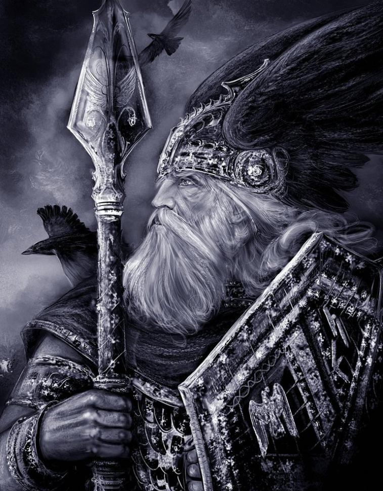
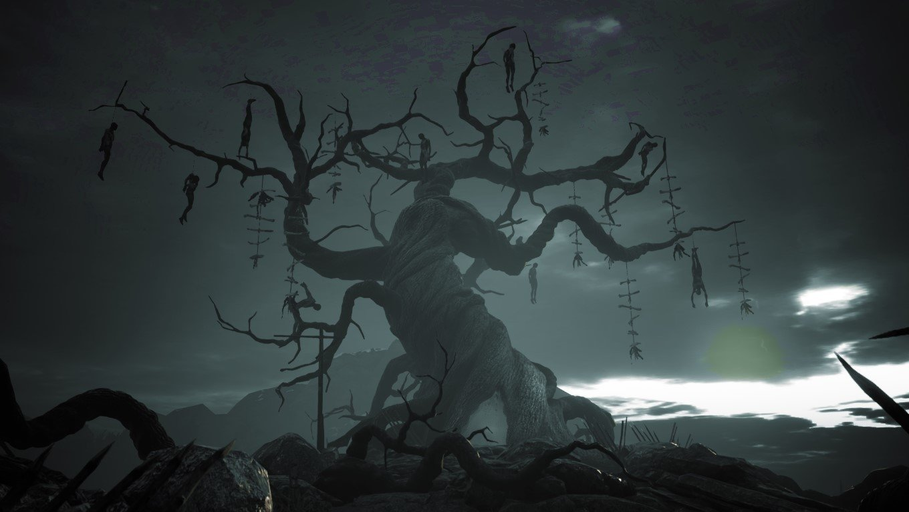
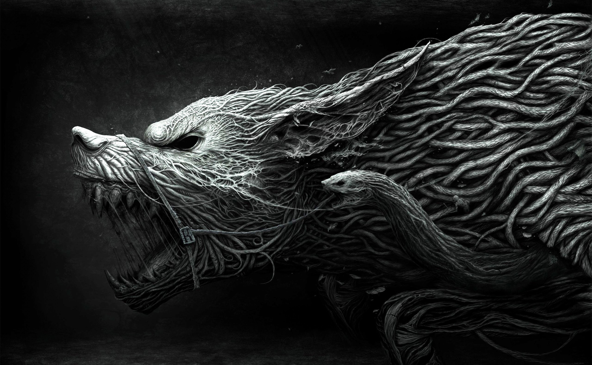

Боги
Боги Асгарда
Асы — это семья верховного бога Одина и боги,
которые изначально приняли его своим владыкой. Они живут в мире под названием Асгард, в котором и находятся их чертоги.
- к богам асгарда относятся:
- Один, всеотец Асгарда
- Тор ,бог грома и молний
- Улль, бог охоты
- Фригг, богиня семейного очага
- Тюр, бог войны
- Бальдр, бог весны и плодородия
Асы произошли от бога Бора. По некоторым данным, все асы могут менять облик по своему желанию, в некоторых же источниках указывается, что конкретный ас обладает способностью превращаться только в определённых существ. Не стареют из-за молодильных яблок, но вполне смертны от физического уронa.
 Боги Ванахейма
- к богам Ванахейма относятся:
- Фрейр, бог лета
- Фрейа, богиня красоты
- Ньерд, бог морей
Ванахейм в переводе с исландского означает дословно «мир ванов». В германо-скандинавском эпосе ваны – это особая категория богов, которые «в начале мира» воевали с асами, в войне спровоцированной ваном Гулльвейгом. Согласно текстам Старшей и Младшей Эдды ваны старше асов и в первой войне они одерживали верх, пока мудрый Один не решился на перемирие.
Война Асов и ванов
Война асов и ванов — одно из ключевых событий в скандинавской мифологии,
вооружённый конфликт между группами богов асов и ванов.
Под именем Heiðr (“яркая”),
богиня Ванов Фрейя пришла в Асгард, дом Асов.
Они были совершенно захвачены ее магическими силами и ревностно искали ее услуг.

Но вскоре они поняли, что их ценности чести, родственной преданности и послушания закону были отброшены эгоистичными желаниями,
которые они стремились удовлетворить с помощью магии ведьмы. Обвиняя Фрейю в своих собственных недостатках,
Асы называли ее "Гулльверг" и пытались убить ее.
Трижды они пытались сжечь ее, и трижды она возрождалась из пепла.за этого Асы и Ваны стали ненавидеть и бояться друг друга,
и эти враждебные действия переросли в ожесточенную и долгую войну.
Асы сражались по правилам обычного боя, с оружием и грубой силой, в то время как Ваны использовали более тонкие средства магии. Война продолжалась еще некоторое время, причем обе стороны поочередно брали верх. После многих лет кипящей вражды между Асами и Ванами и из-за убийства Имира, Бог Ванов Фрейр попытался наладить дипломатические отношения между двумя фракциями. Путешествуя в Асгард, Фрейр учил Асов как использовать магию для сбора урожая, производя пищу для всего королевства. Однако, как только урожай начал умирать, Они обвинили Фрейра, ссылаясь на его магию как непредсказуемую. В результате Фрейр был замучен и почти убит руками Асов, прежде чем сбежать обратно в Ванахейм. Разъяренные Ваны поклялись отомстить Асгарду. После серии стычек между двумя сторонами, Один глава Асов, собрал большую армию и двинулся к Ванахейму. Хотя Асы первоначально доминировали в битве с помощью грубой силы и лидерства Одина, они в конечном счете были отброшены магией Ванов.
Асгард и Ванахейм были разорены войной,и фракции оказались в тупике. Советник Одина Мимир был назначен арбитром между враждующими богами. В конце концов Мимир остановился на мирном решении, в котором один должен был жениться на богине Ванов Фрейе, объединив две фракции как одно целое.Фрейя согласилась на союз, полагая, что это установит мир между королевствами. Однако этот поступок был встречен неодобрением со стороны Вана, который расценил его как предательство. В результате Фрейя была изгнана из Ванахейма,ей запретили возвращаться.